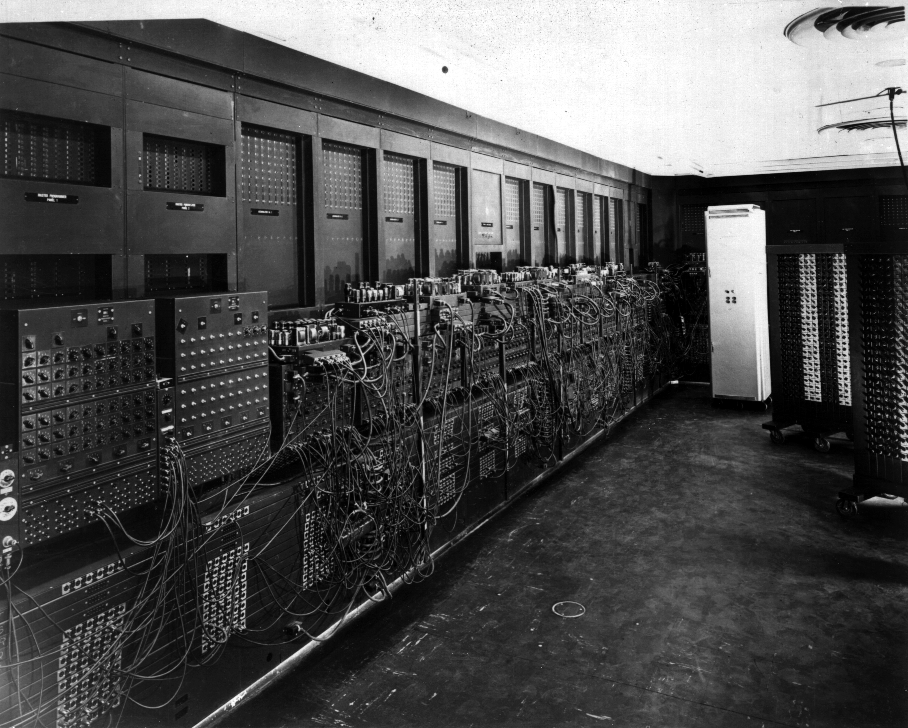
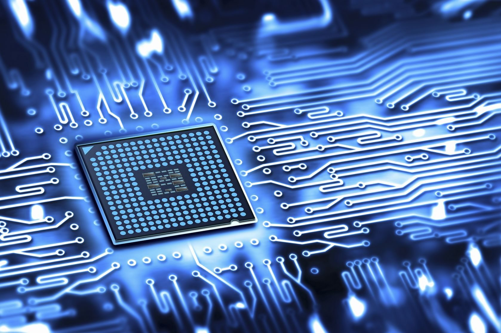
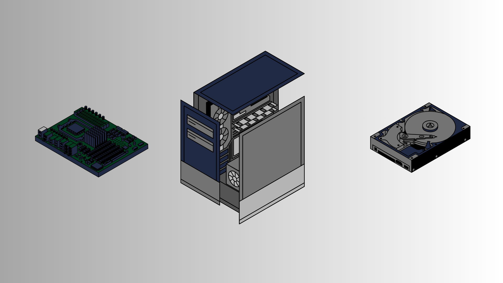

Historia de las Computadoras

La computadora con el paso de los años ha ido evolucionando de monumentales máquinas a dispositivos inteligentes esenciales para la humanidad. A continuación, se presenta su historia, generaciones y la actualidad.
Leer artículo →Arquitectura de Computadoras

La arquitectura de las computadoras define su estructura y comportamiento fundamental. A continuación, se presenta una visión general de los componentes principales y su funcionamiento.
Leer artículo →Sistemas Operativos
Los sistemas operativos son el software fundamental que gestiona los recursos de una computadora y proporciona una interfaz para la ejecución de aplicaciones.
Leer artículo →Virtualización
La virtualización es una tecnología que permite crear múltiples entornos virtuales en un solo sistema físico, optimizando el uso de los recursos.
Leer artículo →Hardware y Software

El hardware son los componentes físicos de una computadora, mientras que el software son los programas y aplicaciones que permiten su funcionamiento.
Leer artículo →